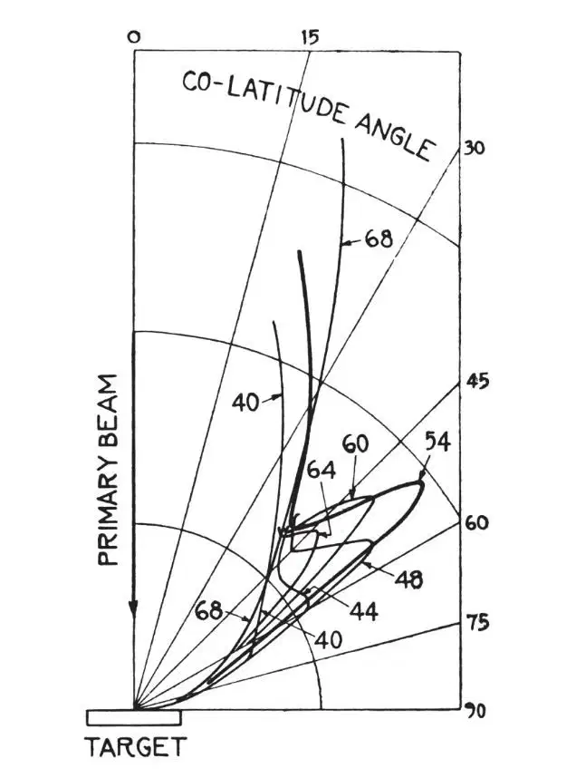
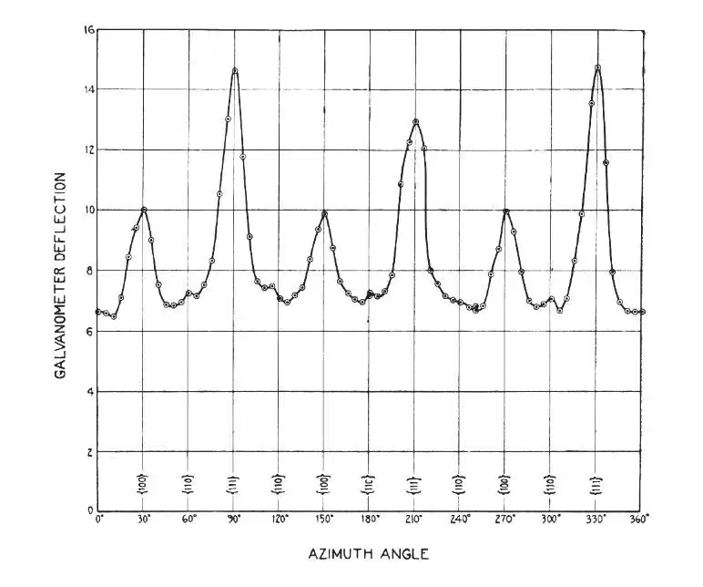
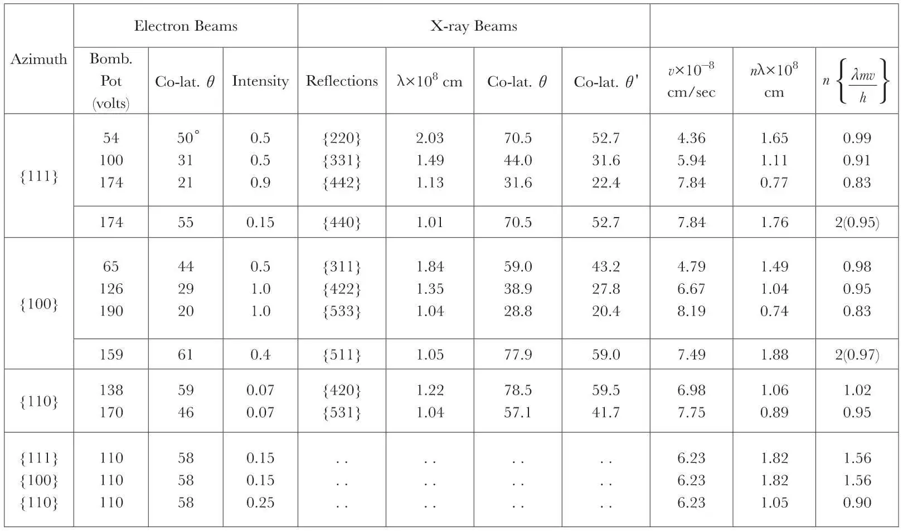

中文
中文C. Davisson and L. H. Germer
Editor’s Note
In his PhD thesis of 1924, Louis de Broglie hypothesized that electrons and other massive particles might behave as waves, just as photons reveal the particle-like aspects of otherwise wave-like electromagnetic radiation. This implied that material particles should exhibit wave-like phenomena such as interference or diffraction. Here Clinton Davisson and Lester Germer of the Bell Telephone Laboratories verified this prediction by measuring the diffraction of an electron beam from a nickel crystal. Using the known spacing of atomic planes in nickel, they were able to calculate the expected angles where diffracted beams should occur if the electrons were indeed acting as waves in the manner de Broglie suggested. The experimental results agreed with these predictions, and they won Davisson the 1937 Nobel Prize in physics. 中文
IN a series of experiments now in progress, we are directing a narrow beam of electrons normally against a target cut from a single crystal of nickel, and are measuring the intensity of scattering (number of electrons per unit solid angle with speeds near that of the bombarding electrons) in various directions in front of the target. The experimental arrangement is such that the intensity of scattering can be measured in any latitude from the equator (plane of the target) to within 20° of the pole (incident beam) and in any azimuth. 中文
The face of the target is cut parallel to a set of {111}-planes of the crystal lattice, and etching by vaporisation has been employed to develop its surface into {111}-facets. The bombardment covers an area of about 2 mm2 and is normal to these facets. 中文
As viewed along the incident beam the arrangement of atoms in the crystal exhibits a threefold symmetry. Three {100}-normals equally spaced in azimuth emerge from the crystal in latitude 35°, and, midway in azimuth between these, three {111}-normals emerge in latitude 20°. It will be convenient to refer to the azimuth of any one of the {100}-normals as a {100}-azimuth, and to that of any one of the {111}-normals as a {111}-azimuth. A third set of azimuths must also be specified; this bisects the dihedral angle between adjacent {100}- and {111}-azimuths and includes a {110}-normal lying in the plane of the target. There are six such azimuths, and any one of these will be referred to as a {110}-azimuth. It follows from considerations of symmetry that if the intensity of scattering exhibits a dependence upon azimuth as we pass from a {100}-azimuth to the next adjacent {111}-azimuth (60°), the same dependence must be exhibited in the reverse order as we continue on through 60° to the next following {100}-azimuth. Dependence on azimuth must be an even function of period 2π/3. 中文
In general, if bombarding potential and azimuth are fixed and exploration is made in latitude, nothing very striking is observed. The intensity of scattering increases continuously and regularly from zero in the plane of the target to highest value in co-latitude 20°, the limit of observations. If bombarding potential and co-latitude are fixed and exploration is made in azimuth, a variation in the intensity of scattering of the type to be expected is always observed, but in general this variation is slight, amounting in some cases to not more than a few percent of the average intensity. This is the nature of the scattering for bombarding potentials in the range from 15 volts to near 40 volts. 中文
At 40 volts a slight hump appears near 60° in the co-latitude curve for azimuth-{111}. This hump develops rapidly with increasing voltage into a strong spur, at the same time moving slowly upward toward the incident beam. It attains a maximum intensity in co-latitude 50° for a bombarding potential of 54 volts, then decreases in intensity, and disappears in co-latitude 45° at about 66 volts. The growth and decay of this spur are traced in Fig. 1. 中文

Fig. 1. Intensity of electron scattering vs. co-latitude angle for various bombarding voltages—azimuth-{111}-330° 中文
A section in azimuth through this spur at its maximum (Fig. 2—Azimuth-330°) shows that it is sharp in azimuth as well as in latitude, and that it forms one of a set of three such spurs, as was to be expected. The width of these spurs both in latitude and in azimuth is almost completely accounted for by the low resolving power of the measuring device. The spurs are due to beams of scattered electrons which are nearly if not quite as well defined as the primary beam. The minor peaks occurring in the {100}-azimuth are sections of a similar set of spurs that attains its maximum development in co-latitude 44° for a bombarding potential of 65 volts. 中文

Fig. 2. Intensity of electron scattering vs. azimuth angle—54 volts, co-latitude 50° 中文
Thirteen sets of beams similar to the one just described have been discovered in an exploration in the principal azimuths covering a voltage range from 15 volts to 200 volts. The data for these are set down on the left in Table I (columns 1–4). Small corrections have been applied to the observed co-latitude angles to allow for the variation with angle of the “background scattering”, and for a small angular displacement of the normal to the facets from the incident beam. 中文
Table I

If the incident electron beam were replaced by a beam of monochromatic X-rays of adjustable wave-length, very similar phenomena would, of course, be observed. At particular values of wave-length, sets of three or of six diffraction beams would emerge from the incident side of the target. On the right in Table I (columns 5, 6 and 7) are set down data for the ten sets of X-ray beams of longest wave-length which would occur within the angular range of our observations. Each of these first ten occurs in one of our three principal azimuths. 中文
Several points of correlation will be noted between the two sets of data. Two points of difference will also be noted; the co-latitude angles of the electron beams are not those of the X-ray beams, and the three electron beams listed at the end of the Table appear to have no X-ray analogues. 中文
The first of these differences is systematic and may be summarised quantitatively in a simple manner. If the crystal were contracted in the direction of the incident beam by a factor 0.7, the X-ray beams would be shifted to the smaller co-latitude angles θ' (column 8), and would then agree in position fairly well with the observed electron beams—the average difference being 1.7°. Associated in this way there is a set of electron beams for each of the first ten sets of X-ray beams occurring in the range of observations, the electron beams for 110 volts alone being unaccounted for. 中文
These results are highly suggestive, of course, of the ideas underlying the theory of wave mechanics, and we naturally inquire if the wave-length of the X-ray beam which we thus associate with a beam of electrons is in fact the h/mv of L. de Broglie. The comparison may be made, as it happens, without assuming a particular correspondence between X-ray and electron beams, and without use of the contraction factor. Quite independently of this factor, the wave-lengths of all possible X-ray beams satisfy the optical grating formula nλ = dsinθ, where d is the distance between lines or rows of atoms in the surface of the crystal—these lines being normal to the azimuth plane of the beam considered. For azimuths-{111} and-{100}, d = 2.15×10–8 cm and for azimuth-{110}, d = 1.24×10–8 cm. We apply this formula to the electron beams without regard to the conditions which determine their distribution in co-latitude angle. The correlation obtained by this procedure between wave-length and electron speed v is set down in the last three columns of Table I. 中文
In considering the computed values of n(λmv/h), listed in the last column, we should perhaps disregard those for the 110-volt beams at the bottom of the Table, as we have had reason already to regard these beams as in some way anomalous. The values for the other beams do, indeed, show a strong bias toward small integers, quite in agreement with the type of phenomenon suggested by the theory of wave mechanics. These integers, one and two, occur just as predicted upon the basis of the correlation between electron beams and X-ray beams obtained by use of the contraction factor. The systematic character of the departures from integers may be significant. We believe, however, that this results from imperfect alignment of the incident beam, or from other structural deficiencies in the apparatus. The greatest departures are for beams lying near the limit of our co-latitude range. The data for these are the least trustworthy. 中文
(119, 558-560; 1927)
C. Davisson, L. H. Germer: Bell Telephone Laboratories, Inc., New York, N.Y., Mar. 3.